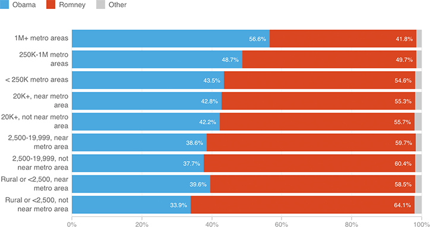

In 2012, Rural Voters Loved Romney. City-Dwellers Chose Obama.
The USDA categorizes counties on a nine-point urban-rural continuum, from cities with populations of more than 1 million to rural, sparsely populated areas (read about them here). Obama far and away won counties in the biggest cities in 2012, while Romney won not only smaller cities but rural areas as well. However, so many people live in those densest counties that it boosted Obama to a win.
